وجوه لم تُنسَ
قادة تركوا أثرًا… ورحلوا قبل أن يروا الحلم كاملًا.
هذا الموقع محاولة لحفظ الذاكرة… لأن النسيان أخطر من الموت.
المعرض
اضغط على أي بطاقة لقراءة تعريف مختصر
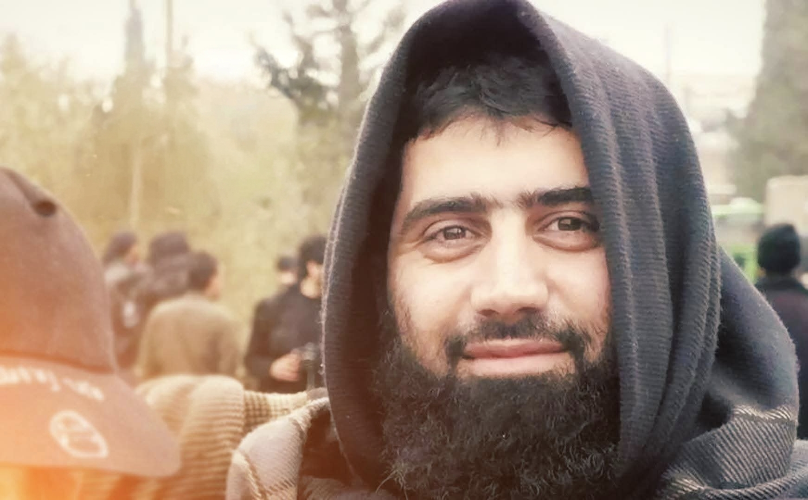
محمد كعكة _ ابو يزن الشامي
1980 — 2014
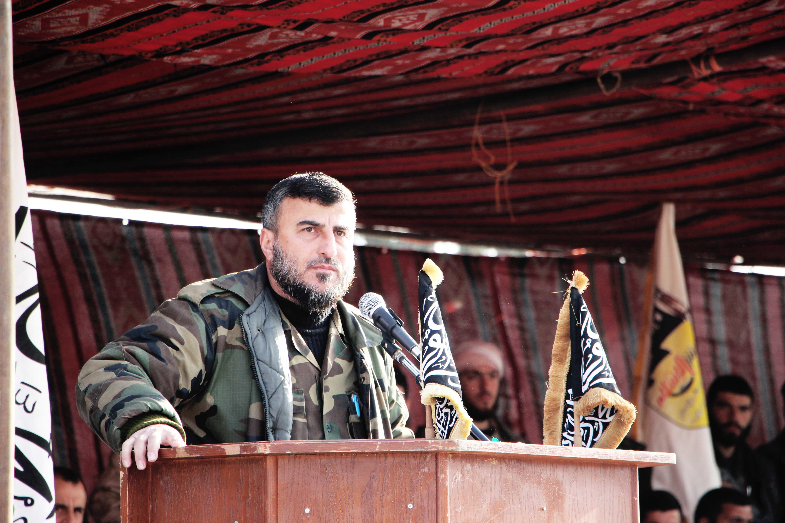
محمد زهران علوش _ قمر الجهاد
1971 — 2015

عبد القادر الصالح _ حجي مارع
1979 — 2013
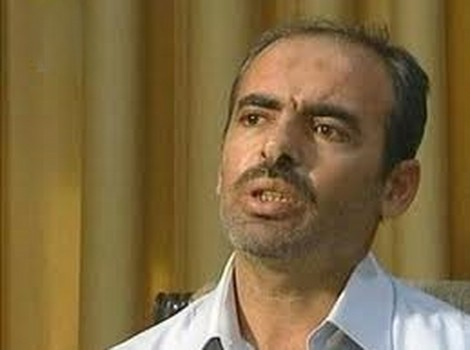
حسين الهرموش
1972 — 2011
أنس عبد الرزاق ناصر _ ابو أيمن الحموي
1981 — 2013
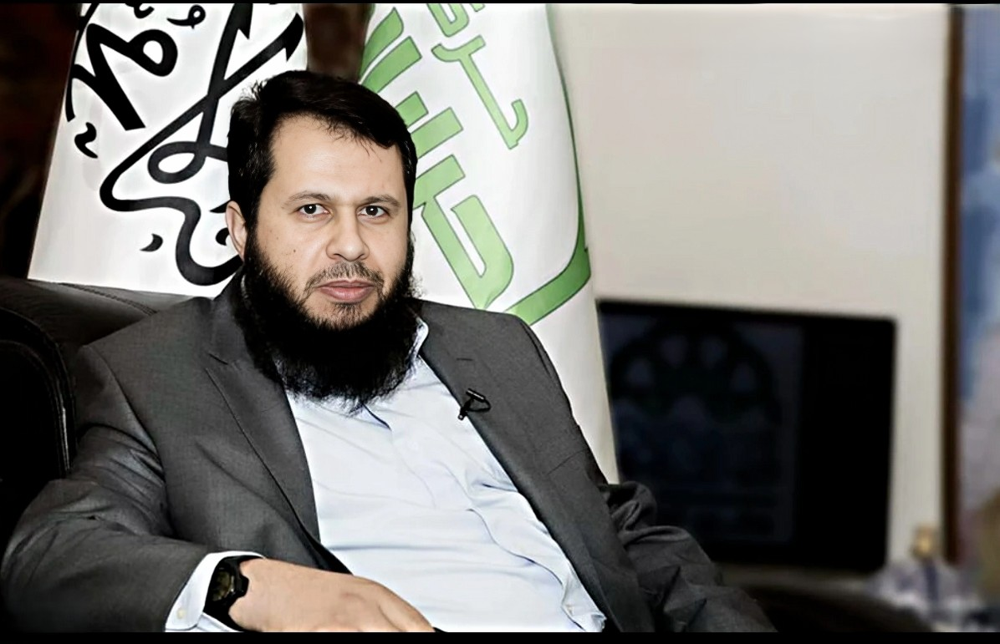
حسان عبود _ ابو عبدالله الحموي
1978 — 2014
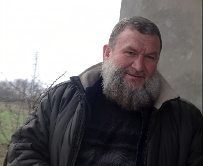
محمد كربج _ ابو خالد السوري
1963 — 2014
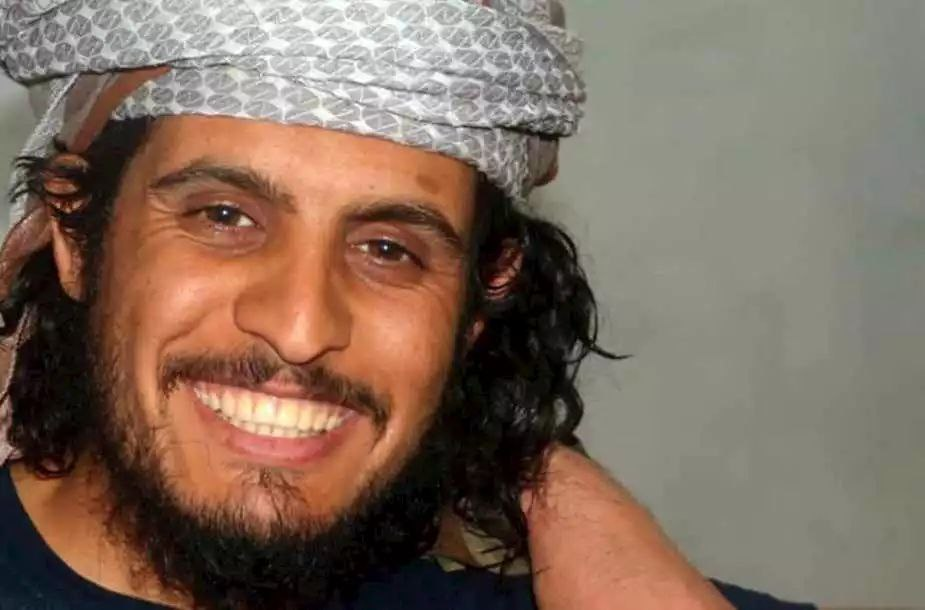
عبد الباسط الساروت _ بلبل الثورة
1992 — 2019
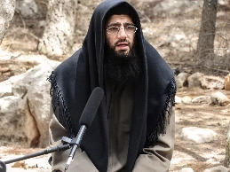
محمود علي طيبة _ ابو عبد الملك
1982 — 2014
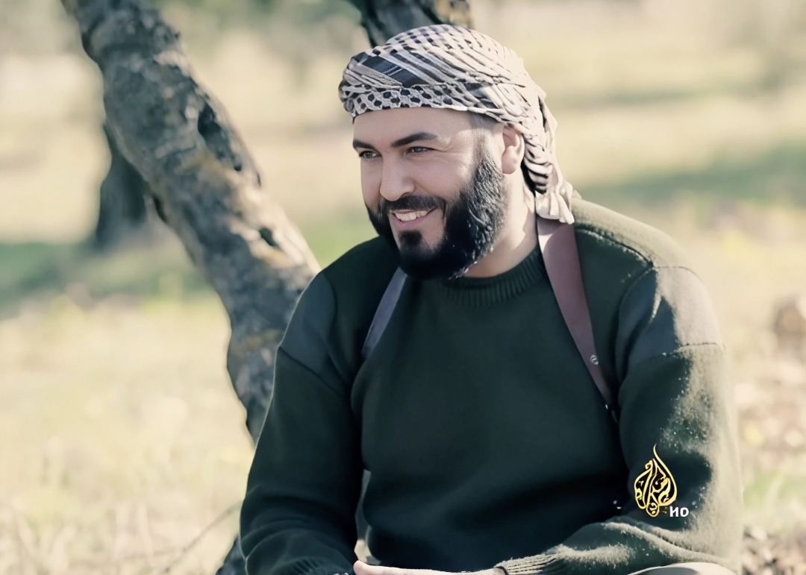
حسين عبد السلام _ ابو حمزة شرقية
// — 2014
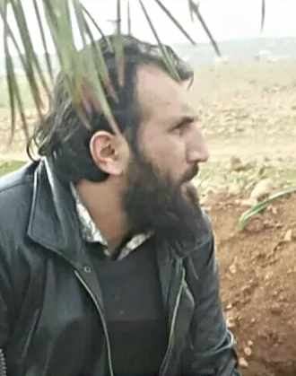
رضوان نموس _ ابو عمر سراقب
1971 — 2016
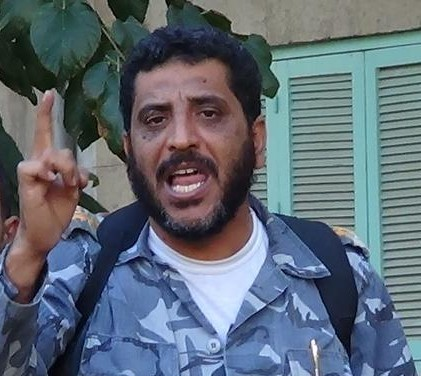
يوسف الجادر _ ابو فرات
1970 — 2012
محمد كعكة _ ابو يزن الشامي
هو محمد أمين بن برهان الدين كعكة، المعروف بلقب "أبو يزن الشامي"، ولد في مدينة دوما بريف دمشق عام 1980، وتخرج مهندساً في الاتصالات.
محطات سريعة
محمد زهران علوش _ قمر الجهاد
هو محمد زهران علوش، ولد في مدينة دوما بالغوطة الشرقية عام 1971، وهو نجل الداعية المعروف الشيخ كعكة (عبد الله علوش). درس الشريعة الإسلامية في دمشق والجامعة الإسلامية بالمدينة المنورة، واعتُقل في سجون النظام السوري لسنوات قبل أن يُفرج عنه مع بداية الثورة عام 2011.
محطات سريعة
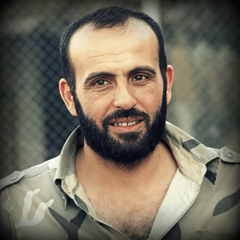
عبد القادر الصالح _ حجي مارع
عبد القادر الصالح، المعروف بلقبه الشهير "حجي مارع"، ولد في بلدة مارع بريف حلب عام 1979، وكان يعمل في تجارة المواد الغذائية والدعوة قبل الثورة.
محطات سريعة
حسين هرموش
هو حسين بن هرموش، ولد في قرية "ابلين" بجبل الزاوية بمحافظة إدلب عام 1972، وكان ضابطاً برتبة مقدم في الجيش السوري. يُعتبر المؤسس الأول للنواة العسكرية المعارضة،
محطات سريعة
أنس عبد الرزاق ناصر _ ابو ايمن الحموي
هو أنس عبد الرزاق ناصر، المعروف بلقب "أبو أيمن الحموي"، ولد في حماة عام 1981، ونشأ في بيئة ناضلت طويلاً، حيث كان والده معتقلاً سياسياً سابقاً.
محطات سريعة
حسان عبود _ ابو عبدالله الحموي
هو حسان عبود، المعروف بلقبه الحركي "أبو عبد الله الحموي"، ولد في مدينة حماة عام 1978، وتخرج من كلية الآداب قسم اللغة الإنجليزية. يُعتبر الشخصية الأبرز والمؤسس الأول لـ "حركة أحرار الشام الإسلامية"، حيث قادها لتصبح واحدة من أكبر وأكثر الفصائل تنظيماً في الثورة السورية. تميز دوره بكونه "عقل الحركة" ومنظرها السياسي
محطات سريعة
محمد كربج _ ابو خالد السوري
هو محمد باهر بن عبد اللطيف كربج، المعروف بلقب "أبو خالد السوري"، ولد في مدينة حلب عام 1963. يُعد من الشخصيات التاريخية في العمل الإسلامي، حيث عاد إلى سوريا مع بداية الحراك ليشارك في العمل الميداني
محطات سريعة
عبد الباسط الساورت _ بلبل الثورة
هو عبد الباسط ممدوح الساروت، ولد في مدينة حمص عام 1992، وبرز كرياضي موهوب حيث كان حارساً لمرمى نادي الكرامة السوري ومنتخب سوريا للشباب. مع انطلاق الثورة السورية عام 2011، ترك مسيرته الرياضية ليصبح "بلبل الثورة" ومنشدها الأول في ساحات حمص
محطات سريعة
محمود علي طيبة _ ابو عبد الملك
يُعد الشيخ محمود علي طيبة، الملقب بـ "أبو عبد الملك"، من المرجعيات الفكرية والشرعية الوازنة في الثورة السورية. ولد في مدينة الباب بريف حلب، ونشأ في بيئة عُرفت بالعلم والفضل، مما أهله ليكون من الرعيل الأول المؤسس لـ حركة أحرار الشام الإسلامية.
محطات سريعة
حسين عبد السلام _ ابو حمزة شرقية
حسين عبد السلام، ابن مدينة دير حافر، من الرموز العسكرية المؤسسة للثورة في ريف حلب الشرقي
محطات سريعة
رضوان نموس _ ابو عمر سراقب
قائد عسكري سوري من مواليد ريف إدلب عام 1971. يُعد المحرك الميداني الأول لعمليات "جيش الفتح
محطات سريعة
يوسف الجادر _ ابوفرات
وُلد يوسف في مدينة جرابلس ودرسَ في أحد المدارس المحليّة بالمدينة ثمّ تخرج من ثانوية أحمد سليم ملا ليلتحق بمعهد إعداد المدرسين في مدينة حلب ثمّ تركها بعد عامٍ واحدٍ ليلتحقَ بالكلية الحربية في حمص في الأوّل من نوفمبر من عام 1990. تخرّج الجادر من الكلية الحربية في كانون الأول/يناير 1993 برتبة ملازم أول ثمّ تابعّ عمله بالسلك العسكري حتى ارتقى إلى رتبة عقيد فصارَ قائد كتيبة المدرعات في اللاذقية.
محطات سريعة
عن الموقع
أخي صانع المجد ها قد ربحت أهنيك يافخرنا من جديد وعهدا سنمضي كما قد مضيت وعن نهج دريك لا لن نحيد
هذا الموقع محاولة لحفظ الذاكرة… لأن النسيان أخطر من الموت. رحلوا وبقيت قصصهم، ونحن شهود.